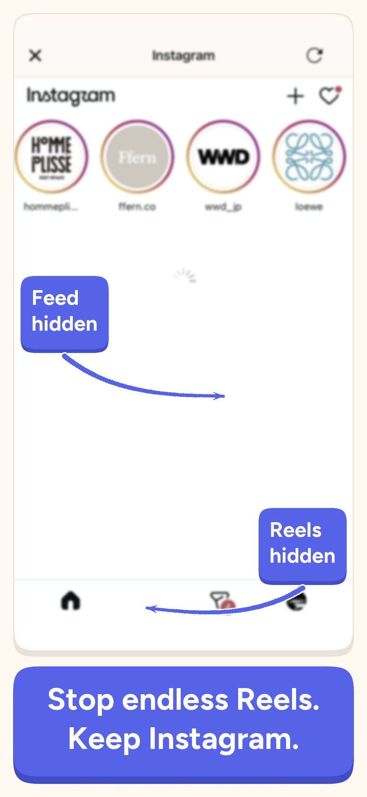
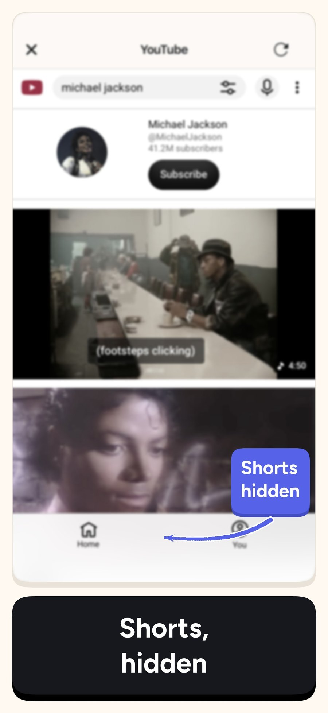
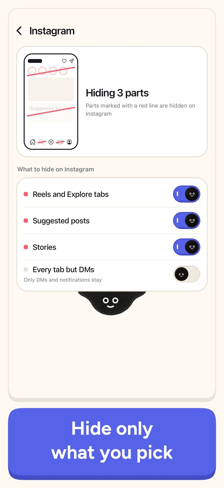
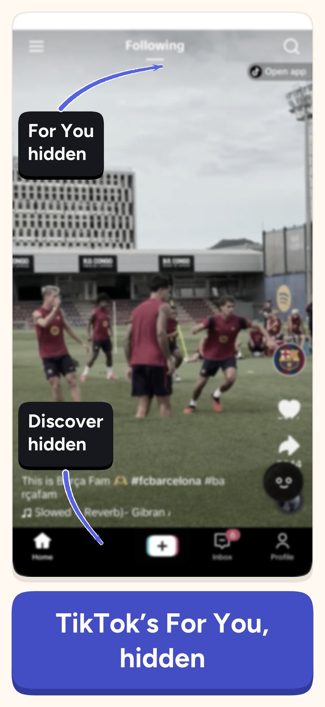
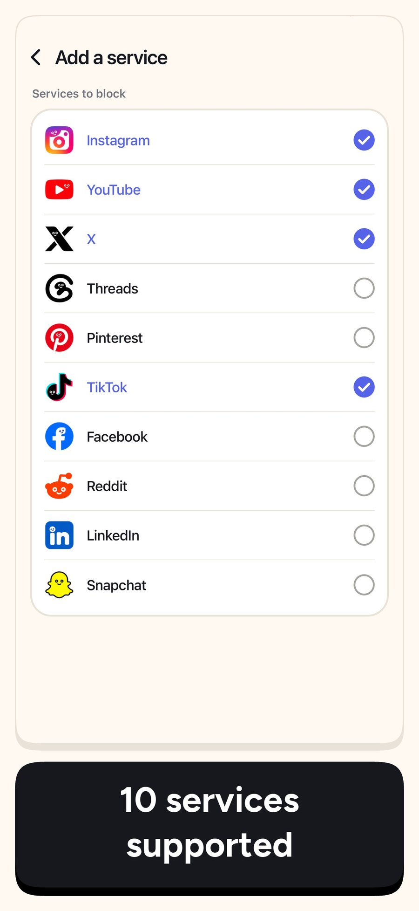
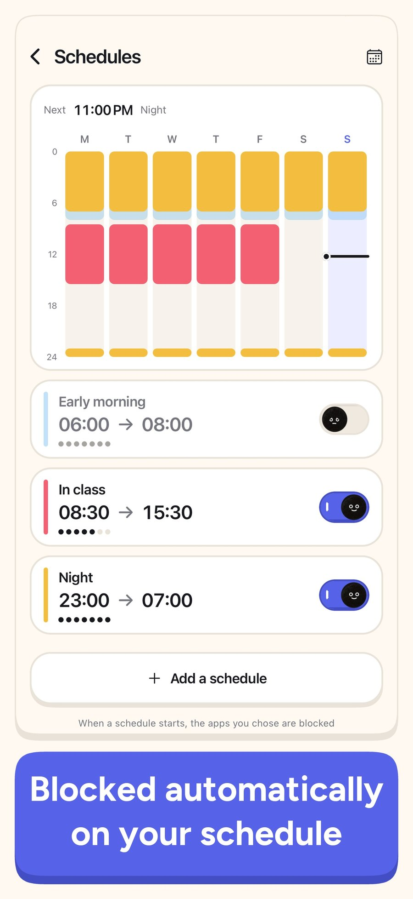
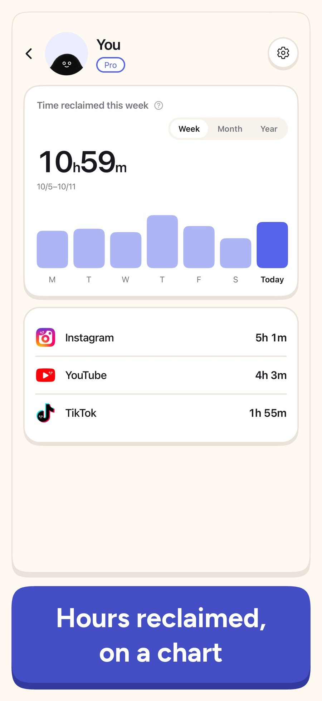
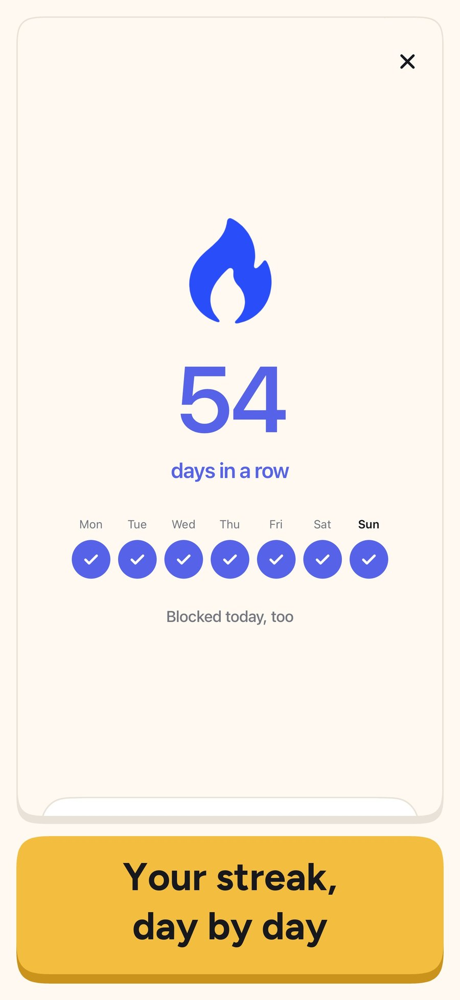
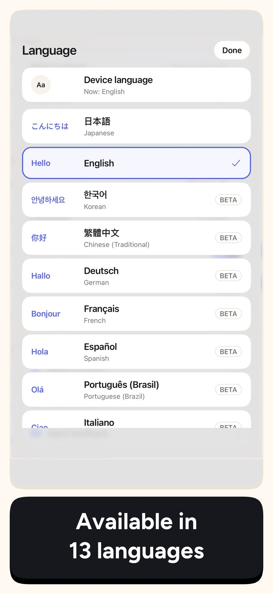

minulo press kit
minulo is an iPhone app that hides Instagram Reels, YouTube Shorts and suggested posts, while your DMs and friends' posts keep working. Most blockers lock the whole app, so messages go too. minulo keeps the parts people need and hides only the feeds built to keep them scrolling.
Updated October 13, 2026
- App
- minulo (formerly FeedMinus)
- Platform
- iPhone (iOS)
- Launched
- September 2026
- Price
- Free to download. Hiding Reels, Shorts and suggested posts is free. Optional Pro subscription (prices in local currency on the App Store; the yearly plan has a 7-day free trial).
- Networks
- Instagram, YouTube, TikTok, X, Threads, Facebook, Reddit, Snapchat, Pinterest, LinkedIn
- Languages
- 13: English, Japanese, Korean, Traditional Chinese, German, French, Spanish, Portuguese, Italian, Indonesian, Thai, Vietnamese, Russian
- Privacy
- You sign in on each network's own login page. minulo never receives passwords or DM contents. Official apps are blocked with Apple's Screen Time framework, which hides from the developer which apps you chose.
- Developer
- Ayumu Kitabayashi, a solo developer in Japan (ReliefNote)
- Contact
- workflowai.japan@gmail.com
- Links
- App Store · Website · FAQ · minulo vs SocialLite
How it works
You open Instagram, YouTube or another network inside minulo, and it loads with Reels, Shorts, recommendations and suggested posts already hidden. DMs, friends' posts, search and posting keep working. With Screen Time access, minulo can also block the official apps you pick: tap Instagram on the Home Screen and you land in minulo's version without Reels. A Reel sent to you in a DM stops at the door, with an "Open for 5 min" option if you really want to watch it.
Why it was made
The developer kept opening Instagram to reply to one DM and looking up 30 minutes later, still in Reels. Quitting social media was not an option, because friends and work are there. minulo is the tool the developer wanted: keep social media, lose the endless scroll.
Screenshots


Screenshot 1

Screenshot 2

Screenshot 3

Screenshot 4

Screenshot 5

Screenshot 6

Screenshot 7

Screenshot 8

Screenshot 9Logo and icon
App icon (PNG) · Wordmark (PNG) · Banner 1200×630 (PNG)


These are the App Store screenshots (English). You may use these images when writing about minulo. Screenshots show third-party services for illustration; their names and logos belong to their owners.